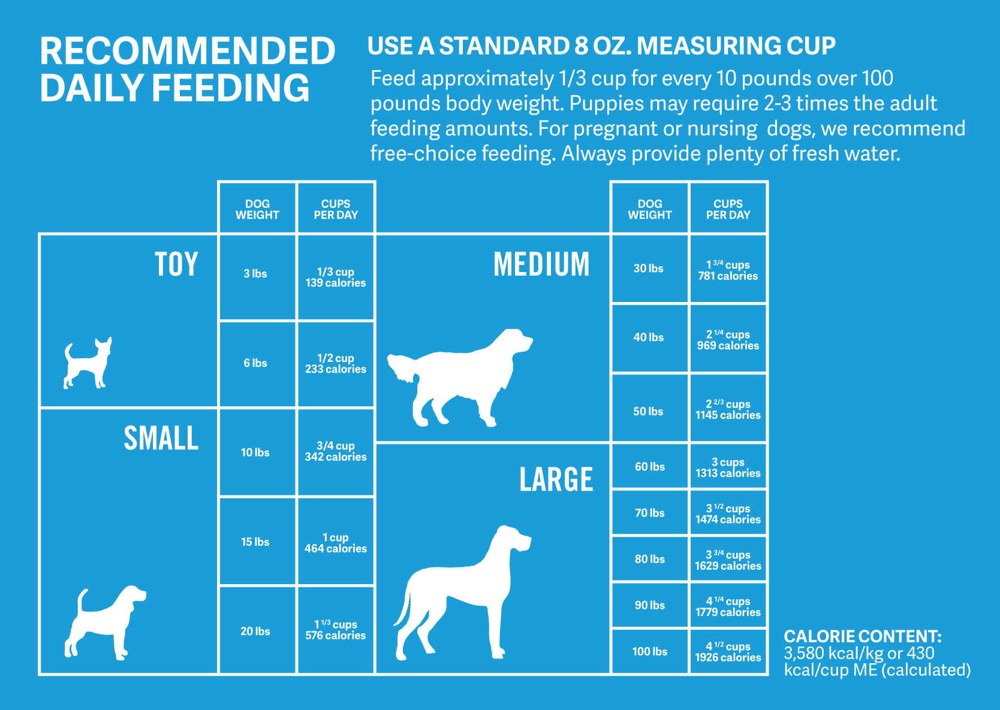

<< Home
Nutrition and Feeding
Feeding and nutrition along with exercise is a key component of keeping your dog in a healthy weight range. Dogs are as adversely affected by obesity and being underweight as humans, so it is important to monitor your dog's food intake carefully. Below are some commonly asked questions and their answers.
- How much?
This is one of the most commonly asked questions by new dog owners. Their puppy seems to be wolfing down food and growing at an alarmingly fast rate. It may even have some ribs showing, and in this case, dog owners wonder if their puppy needs more food. The best thing to do is to ask your vet about this as they will be the most educated, and able to judge the healthy weight range of your pup. However, as a general guide, there is a table on the back of dog food cans that tells you what portion you should be giving to your dog depending on their breed, size and age. Simply follow these instructions and your dog should do well.
- Puppy Food?
Puppy food is high in energy and other nutrients. It is fine to feed your puppy puppy food until about 3 months old, but then you should gradually switch them over to adult dog food. This is because is some large breeds, puppy food causes accelerated growth, and this may be harmful for the long term joint health of your puppy.
- Should I give my dog supplements?
Supplements are not necessary for dogs unless your vet recommends them. Dogs generally get all their nutrients from dog food.
- How often should I feed my dog?
It is best to feed your dog 3 times a day. Some people prefer to do it two times a day, but that can cause distended stomachs in older dogs. Instead, it is better to give your dog smaller portions of food and water throughout the day. This applies for water too. You should give them specific amounts of water throughout the day, and not just have a water bowl that they are free to drink out of. Another important note is to not give your dog water 30 minutes before and after exercise.
Below, you can see the table on the back of many dog food packets. You can fluctuate the recommended amount depending on how active your dog is.

Contact Us
Copyrights reserved@2020-21